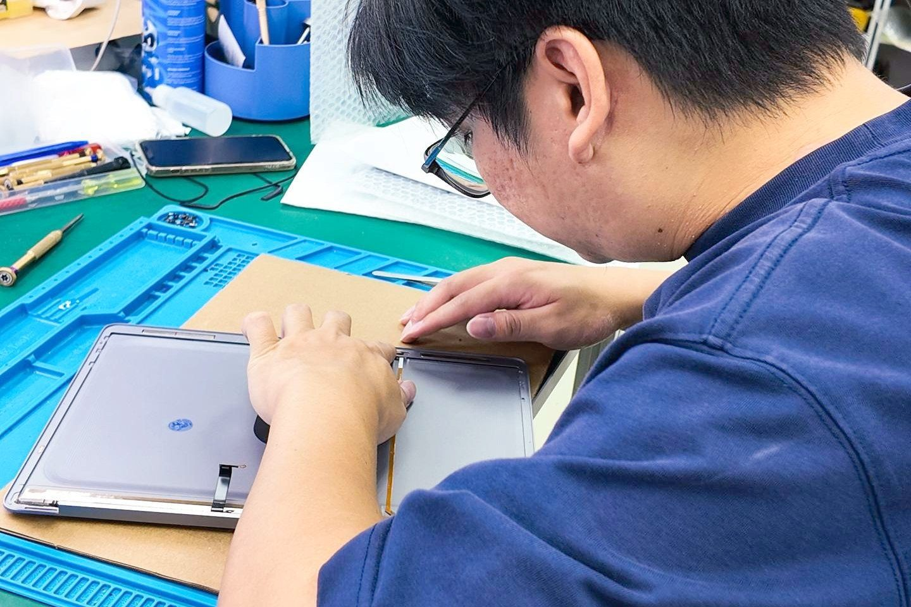

Home/Mac Repair/Screen replacement
Cracked glass, flickering panels, dark screens and dead pixels. Most MacBook screens are done the same day, colour-matched and tested before you collect.
same day,
most models

On a MacBook the display is a full assembly: panel, backlight, hinges, antennas and camera. On an iMac the panel is separate from the glass, and on an iPad the digitiser sits over the LCD. Which parts your repair needs depends on the fault, and we tell you that after the free diagnosis, not before.
Impact is the obvious one. The rest are quieter. A hinge that has stiffened stresses the display cable every time you open the lid, and on some MacBook Pro models that cable is short enough to wear through on its own. It shows up first as an uneven glow along the bottom of the screen, then the backlight goes completely.
Lines and flicker usually mean the panel or its connector, but they can also come from the graphics side of the logic board. That difference matters, because replacing a perfectly good panel will not fix a board fault. We test both before quoting.
Most MacBook screen replacements are finished the same day, often while you wait, because we keep common panels in stock. iMac panels and less common models may take an extra working day. You get the timeline with your quote.
We run a full function test: brightness across the range, True Tone where the model supports it, camera, Wi-Fi and hinge tension. Selected screen repairs carry up to 5 years warranty, stated on your invoice.
The things people ask about this repair at the counter. Anything else, message the workshop and we will answer today.
Ask us directlyYes. We fit original-grade panels and check brightness and colour against the model spec before you collect. On models with True Tone we verify it still works.
Sometimes. Lines can also come from the display cable or the graphics side of the logic board. The free diagnosis tells us which, so you are not paying for a panel you did not need.
Often yes. If the LCD underneath is undamaged we replace the glass and digitiser only, which costs less. We confirm after testing.
Five steps from the moment you message us to the moment you collect.
Message us on WhatsApp or walk in. Describe the symptom, send a photo if you can.
We test the device properly and find the actual fault, not the easy guess.
You get the price and the timeline first. Nothing is opened until you approve.
Done in-house at our own bench, down to board level when that is what it takes.
Full function test, then pick it up or we send it back. Warranty starts that day.
Free diagnostics at all three branches. Tell us the symptom and we will tell you what it takes to fix it.